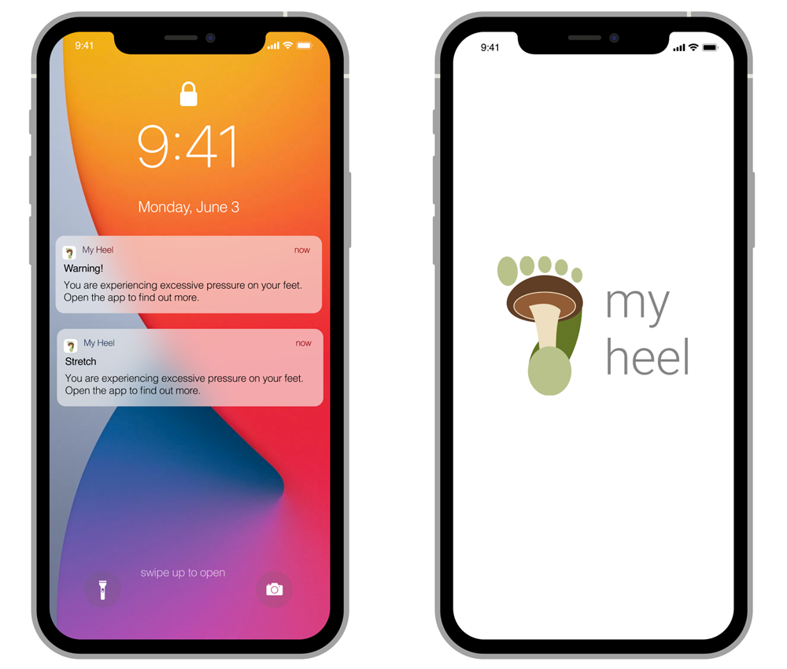
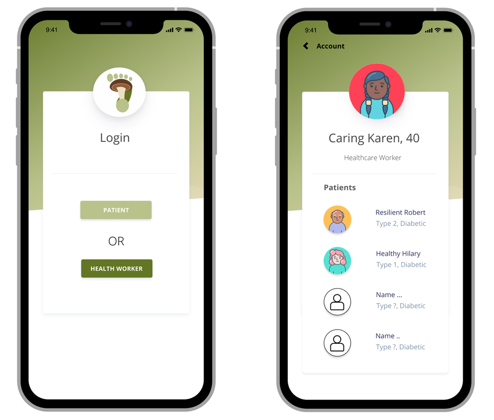
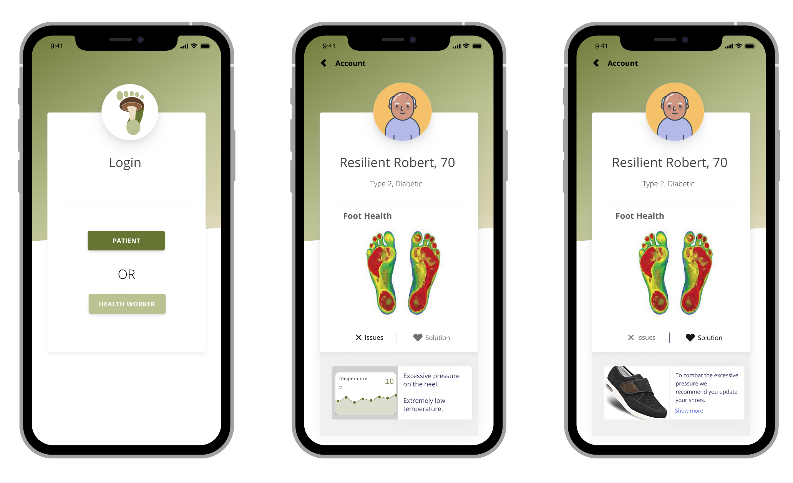

What will it be used for?
Foot health is an important aspect of a person’s general health as foot problems can severely impact a person’s mobility and quality of life. According to the Australian Podiatry Association, the field of podiatry deals with “the prevention, diagnosis, treatment and rehabilitation of medical and surgical conditions of the feet and lower limbs” (Australian Podiatry Association, n.d.). Globally, a number of organisations such as Foot Health Australia and the American Podiatric Medical Association have developed health campaigns to promote foot health awareness amongst the general population (Foot Health Australia, n.d.; Clark, 2019).
Foot ulcers are one of the most severe forms of foot-related disease. They can be caused by a range of (often interrelated) diseases such as diabetes, vascular disease and peripheral neuropathy (i.e. loss of feeling in nerves in a person’s extremities). Foot ulcers require timely intervention because, if left untreated, they can ultimately lead to foot amputations. Diabetic patients with foot ulcers have a high rate of morbidity - on par with aggressive forms of cancer (Armstrong et al., 2013, p. 1816).
Each year in Australia there are more than 4,400 amputations resulting from diabetes and this is the second highest rate in the developed world (Australian Commission on Safety and Quality in Healthcare, 2016). Between 1998-2011, the rate of diabetes-related amputations increased in Australia by over 30% (Lazzarini et al., 2012, p.24). The average cost of a diabetes-related limb amputation is around $23 555, and an additional annual expenditure of $6 065 every year thereafter (Lazzarini et al., 2012, p.24). Evidence-based care for Australians with diabetic foot ulcers could save the health system approximately $2.7 billion over a five year period (Cheng et al., 2017).
The bio-designed mycelium insole developed in this project could help to address this pressing problem in Australia, and potentially it could also be administered across the globe to provide a cost-effective, fast-growing product that facilitates foot health awareness.
There are currently a range of smart insole devices on the market that allow users to monitor their feet such as the Bonbouton smart insole, the SmartMat foot health monitoring platform and the MIMOSA (MultIspectral MObile tiSsue Assessment device), among others (refer to Appendix, p. 8). The MyHeel smart insoles stand apart from other smart insoles on the market because they are biodegradable (with reusable microbits) and they consider the needs of both the user and health care professionals - by providing a user-friendly and interactive bluetooth application that connects directly to the insoles. This allows the wearer to collect important data about their feet, link their data to a nominated health professional and engage in interactive exercises via bespoke biofeedback technology.
|  |  |
|  | |